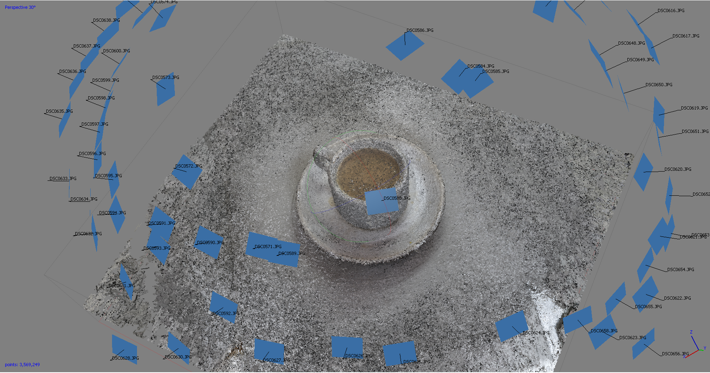
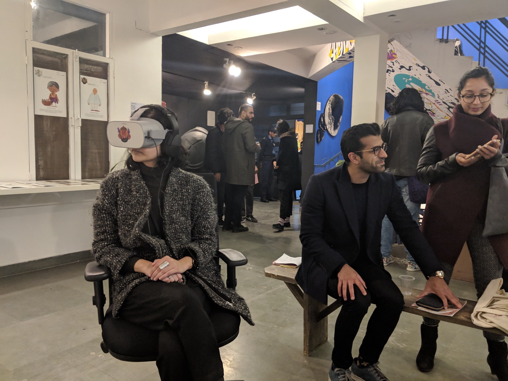

Bambaiyya VR
Overview
Engaging with the culture and heritage of Mumbai through an interactive, narrative based virtual reality experience
Role
Designer and Researcher
Funded by
British Council & Prince Claus Fund
In this day and age, we are always running around doing something or the other. But sometimes when we pause and notice the world around us, we are suddenly pulled into this vacuum were we feel empty and question the meaning of our existence. We find it very difficult to escape that vacuum with a logical reasoning. That is partially due to this massive disconnect we have with our roots; with our culture. In this hyper commercial world we are not aware of what makes us “US” and how are we connected to the people and places around us. To find ourselves we need to journey inwards and replenish this cultural draught that has been going on for generations under the pretext of development and modernisation.
Conducting research with various communities in Mumbai
Bambaiyya VR is funded by The Contemporary Take, Beyond Cultural Heritage Programme by the Prince Claus Fund and the British Council, which enables young people to engage with diverse cultural heritage within their own context and/or across six countries of South Asia (i.e. Afghanistan, Bangladesh, India, Nepal, Pakistan and Sri Lanka) through contemporary artistic and new media interventions.
The core idea behind the narrative for Bambaiyya VR is the documentation of unique spaces in Mumbai that have stood the test of time but are now fading away due to rapid urbanisation. Tradition and culture make a place unique and interesting to live amidst. They should play a vital role in the redevelopment of a city. Unfortunately, in most cases these have been neglected. Cities are losing their essence and are turning into concrete jungles. We want to capture places in Mumbai that were once iconic in their prime but have now turned into a blur as the city moves on. Culture and traditions add so much of flavour to our everyday life in the form of festivals, food and colour. It pumps vibrancy into an otherwise monotonous lifestyle and also bridges generations by giving a topic to talk about. Culture and traditions can leave you with a richer and wholesome experience that is lacking in today pseudo society. This journey back in time will help you build/find a route to a more fulfilling future.
Initial VR sketches

Capturing objects via photogrammetry
During our research, we also started our pre-production. To create a VR film we needed media assets, which would be the building blocks of the film. Our lead artist, Archit Vaze drew the illustrated environments you see in virtual reality. To complement the illustrated worlds, we used a new and nascent process of Photogrammetry to digitally scan objects and use them in the VR experience. Photogrammetry is the use of photography to ascertain measurements between objects. It is the act of taking many photos of an object and calculating distances and angles to form a 3 dimensional model. This process is simple, yet yields accurate 3D geometry and high fidelity textures.

Digital interpretations of the Parsi Cafe experience
To build on the narrative of the city, the first task was to collect to talk to people and understand the heritage and culture of Mumbai. The research for Bambaiyya VR has underwent three phases.
First: Finding out intriguing narratives that people must have overlooked, oral folk narratives that are very peculiar to specific communities, visual references of these narratives and spaces occupied by the communities became the major step to get a better understanding of the city. This process got us in contact with a few communities of the city namely, Koli, Bhandaris Pathare Prabhus, Jains & Marwaris, Muslims, Parsis, Christians, Marathas, Mill workers, South Indians, Bene Israelis etc. All of these communities have contributed in their on ways to build the city as we see it today. The VR experience that would be created would be a collection of the various spaces that belong to them along with the oral narratives specific to these communities.

Chawls of Mumbai

Kayani Cafe
Building on the narrative, the three communities on which work was started are the Koli Community, the original inhabitants, who provided their land to build Mumbai Parsi Community, the immigrants, who provided their money and administrative skills to build the city of Mumbai Mill Worker Community, the labourers, who provided their skill and hard work in the various industries to build Mumbai.
Stories of the three different communities
Bambaiyya VR has been touring India for the last year or so, so far being exhibited at the Godrej Cultural Lab (Mumbai 2018), The Irregulars Art Fair (Delhi 2019), Future Fiction (Bangalore and Mumbai 2019), Bhau Daji Lad Museum (Mumbai 2019), EyeMyth Media Arts Festival (Mumbai 2019), TIFA Cyberia (Pune 2019).

On display at Godrej Cultural Center, Mumbai


On display at The Irregulars Art Fair, Delhi. Yes, the food is just as good in VR
Press
The Hindu: ‘Bambaiyya’: A magic carpet tour of Mumbai
Mid-Day: Mumbai, up close and personal
LiveMint: This summer, reconnect with your city through quaint experiences